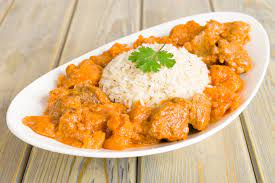

Le mafé ou sauce arachide
Le mafé est un plat typique du Sénégal qui allie une viande généralement blanche à une préparation épicée avec des cacahuètes. La sauce à l'arachide serait quand à elle originaire du Mali, même si sénégalais et maliens se disputent parfois son origine. Nous vous proposons aujourd'hui de découvrir comment réaliser votre propre mafé de poulet en quelques instants et sans avoir besoin de voyager aussi loin. Dépaysement garanti !
Les ingrédients nécessaires
Pour préparer le Mafé Poulet sénégalais pour 4 personnes, vous aurez besoin des ingrédients suivants:
4 cuisses de poulet
2 oignons hachés
2 gousses d’ail hachées
3 cuillères à soupe d’huile d’arachide
4 cuillères à soupe de beurre de cacahuète
3 tomates coupées en dés
2 carottes coupées en dés
1 poivron vert coupé en dés
1 piment frais
2 feuilles de laurier
1 cuillère à soupe de concentré de tomate
Sel et poivre noir
500 ml d’eau
La préparation:
Dans une grande casserole, faites chauffer l’huile d’arachide à feu moyen.
Ajoutez les cuisses de poulet et faites-les dorer de tous les côtés.
Retirez le poulet de la casserole et réservez-le.
Ajoutez les oignons et l’ail dans la casserole et faites-les revenir jusqu’à ce qu’ils soient dorés.
Ajoutez les tomates, les carottes, le poivron et le piment frais dans la casserole et faites-les revenir pendant 5 minutes.
Ajoutez le beurre de cacahuète, le concentré de tomate, les feuilles de laurier, le sel et le poivre noir dans la casserole et mélangez bien.
Ajoutez le poulet dans la casserole et versez l’eau.
Portez le tout à ébullition, puis baissez le feu et laissez mijoter pendant 30 minutes.
Servez le Mafé Poulet chaud avec du riz.
